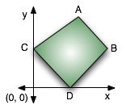

You have been given the task of cutting out a quadrilateral slice of cake out of a larger, rectangular cake. You must find the slice with the smallest perimeter that satisfies the following constraints.  If the cake is of size 10000-by-10000 units and is represented using the first quadrant of the Cartesian plane, then your slice is quadrilateral ABCD (see figure). Points A and B are fixed and will be given to you. Also, A,B will lie on a negatively sloping line. Furthermore, points C and D must lie on the positive y-axis and positive x-axis respectively, but it is up to you to determine where these two points should be. A,B,C,D will be distinct points.
Output the minimum perimeter of your slice of cake.
On the first line you will be given n (1 ≤ n ≤ 100), the number of test cases. The following n lines each contain ax ay bx by (0 < ax, ay, bx, by ≤ 10000.0), the coordinates of points A and B respectively.
For each test case, output the perimeter accurate to 3 decimal places on its own line.
1 3.0 1.0 1.0 2.0
7.236